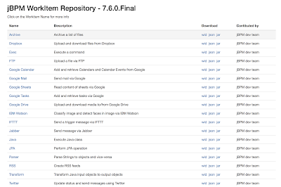
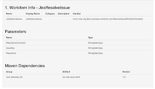
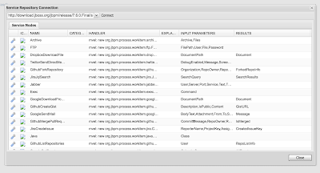
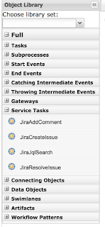
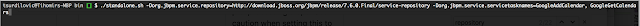

Updated jBPM Service Repository
 |
| 1.0 Updated jBPM Workitem Repository for 7.6.0.Final |
The jBPM Service Repository has received a major update and is now available since the 7.6.0.Final release ( http://download.jboss.org/jbpm/release/7.6.0.Final/service-repository/ ). The release number follows the jBPM releases so you can chose the service repository that is compatible with the jBPM version you are using.
On top of updating the service repository we have also added a great number of new integration services (workitems) that you can chose from. Building the repository locally, adding new workitems and contributing them to the community has also been made a lot simpler, so lets take a look at each of the new features and how you can use them to help bridge the gap between your business processes and services.
New integration services
New integration services
The updated service repository includes a number of new integration services (workitems) that you can use within your business processes. Here is a list of the new services that were added and the description of what each can help you achieve inside your business processes:
- Dropbox – Upload and download files from Dropbox
- Google Calendar – Add and retrieve Calendars and Calendar Events from Google
- Google Mail -Send mail via Google
- Google Sheets – Read content of sheets via Google
- Google Tasks – Add and retrieve tasks via Google
- Google Drive – Upload and download media to/from Google Drive
- IBM Watson – Classify image and detect faces in image via IBM Watson
- IFTTT – Send a trigger message via IFTTT
- Twitter – Update status and send messages using Twitter
- Github – Create Gist or list your repositories in Github
- Jira – Create or update Jiras
As mentioned this list is a growing list and we are looking for contributions from the community to make it even bigger. If you have implemented or are planning to implement your own workitems and feel like contributing them for all of the jBPM community to use please contact us on IRC or the jBPM mailing list and we will be more than happy to help to get your implementation in this repository.
Updated workitem documentation
Each workitem in this repository has a nice documentation page now which describes its input/output parameters, dependencies etc. Here is an example of this:
 |
| Sample workitem documentation page |
Easy to see download links
The download links for each of the services in the repository are much clearer to see now as they are presented right on the repository main page. The downloads available for each of the services are it’s workitem definition (.wid), its JSON workitem definition (.json), and the service jar file (.jar). Here is an example of that:
| Download links |
Building the jBPM service repository locally
You can easily build the jBPM service repository locally and host it yourself. The service repository is hosted on Github – https://github.com/kiegroup/jbpm-work-items. If you clone this repository locally and build it (using Maven) the entire repository as shown here will be build in the repository/target directory. A zip file that includes the entire repository is also available for you there to share or extract to your desired location.
You can easily build the jBPM service repository locally and host it yourself. The service repository is hosted on Github – https://github.com/kiegroup/jbpm-work-items. If you clone this repository locally and build it (using Maven) the entire repository as shown here will be build in the repository/target directory. A zip file that includes the entire repository is also available for you there to share or extract to your desired location.
Using services in the repository
Having a service repository gives you a really nice way of sharing your service integration point with anyone that wants to use them in their business processes. It gives you the ability to share services within our outside your businesses. Within the realm of jBPM there are two ways of using sservices from the repository in business processes:
1. Install within the KIE workbench via the jBPM Designer
jBPM Designer includes a service repository connection feature which allows you to enter the repository URL and install services from it. Once installed these services are automatically registered with your workbench project and are available for you to use in the node palette when designing processes:
 |
| Connect and install workitems from any jBPM Service Repository |
 |
| Installed services available in the process nodes panel |
2. Pre-Install on AS startup
If you are running the Kie workbench you can tell it to prtee-install a number of services from your service repository. With this option your services will be installed before you start designing your business processes. Same as above, services will be available in the process nodes panel of jBPM designer and registered within your workbench project configurations. For this you need two system properties namely org.jbpm.service.repository which defines the url to your service repo (note this can also come from the file system) org.jbpm.service.servicetasknames which is a comma-separated list of the workitem names from your repository that you would like to install. Here is an example of this:
 |
| Sample command like to pre-install workitems |
Want to contribute?
We would really like for this service repository to become community-driven and have made strides to allow the community to easily do so. Feel free to fork https://github.com/kiegroup/jbpm-work-items and add your own implementations to it. Once ready to contribute or have any questions or need help feel free to contact us on IRC or the jBPM mailing list.

{kind=link}
{kind=link}
{kind=link}
{kind=link}
{kind=link}
{kind=link}